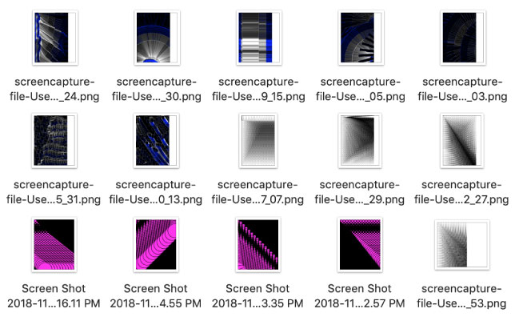
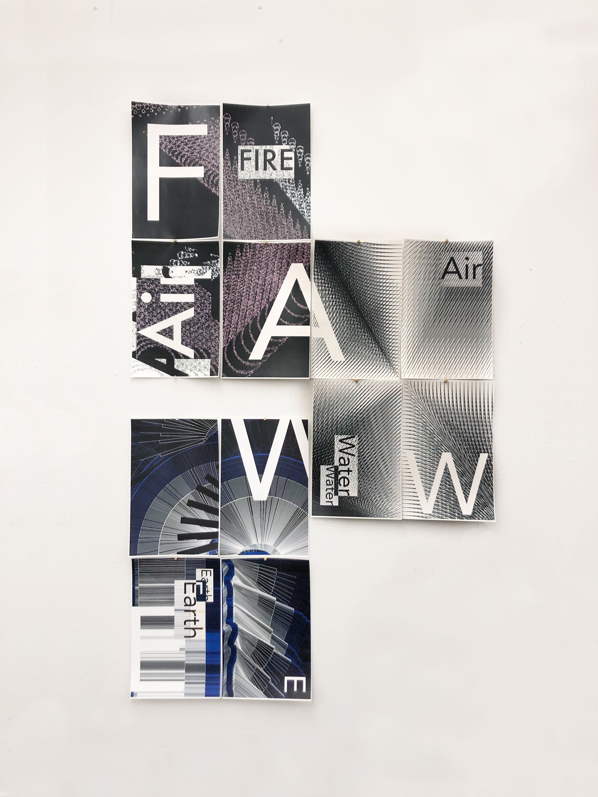
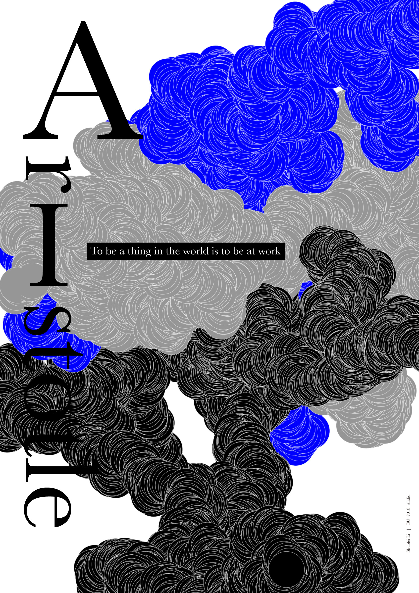
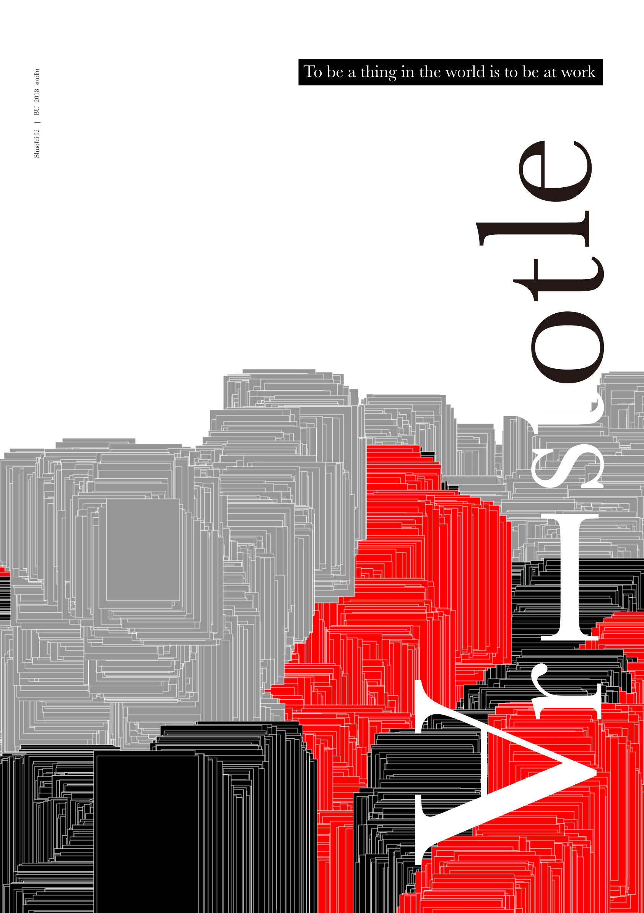

Project time: 3 days
p5.js a JS client-side library for creating visual and interactive experiences, based on the core principles of Processing.
One of my assignments was to make a poster based on an article about Aristotle’s motion theory and learning p5.js at the same time.
p5.js was not necessary to use for the assignments, but I think it was an excellent chance to investigate new stuff and make something fun!

Aristotle believed four elements could combine everything: fire, air, water, and earth. I coded to change the brush shape to imitate those four elements. Then, I asked my laptop to drew another two posters. When my computer was generating my graphic, I can do something else. It's a real time saving and fun project I never had.
 The inspiration was the word Aristotle said, "To be a thing in the world is to be at work." I thought the computer was a thing that works for humans, so I asked my laptop to make a poster for me, and the title combined Aristotle and AI.